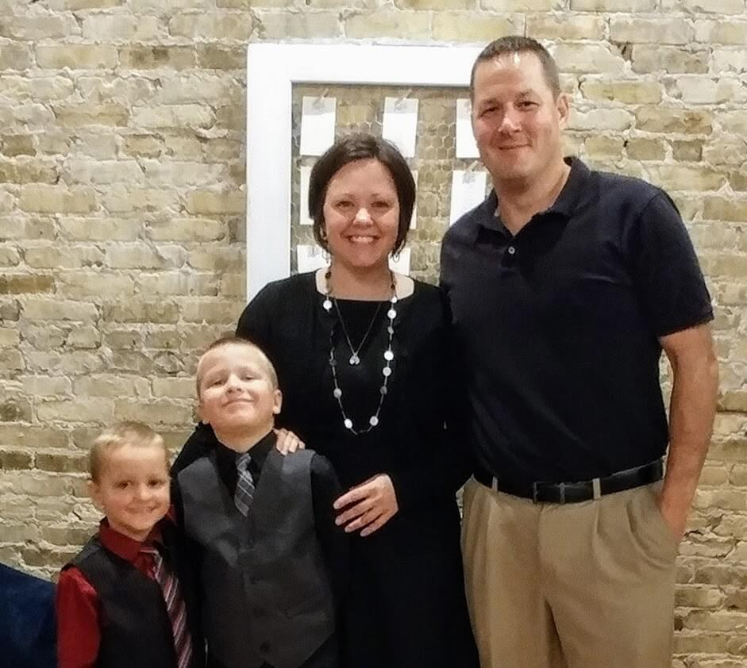

Career
Life long learning is not only a passion of mine but something that I try to instill with my students.
I am currently a STEM teacher at Mid-Prairie Middle School where I have the privilege of teaching
every student.
Here is the breakdown of what I teach:
5th Grade: Engineering Principles
6th Grade: Computer Science Discoveries
7th Grade: Design & Modeling
8th Grade: Automation & Robotics
Sounds interesting, right. My day at school maybe hectic but it is certainly never boring and
the kids always keep me on my toes!
Family

Family is extremely important to me. I have been married to my best friend, Jeff Huber
for 14 years. We have two very energetic boys that keep us on our toes. The oldest, Tyson,
is 9 years old. My youngest, Kaden, is 7. We also have three fur babies. Max and Shadow,
our cats, love to torment our Golden Retriever.
Hobbies
When I am not running after my kids or teaching, I can often be found either at the pool or outside.
I am one of our local YMCA swim coaches, where I am able to share my passion of swimming with others.
In addition to coaching, I love to run, hike, scuba dive and work in the garden .